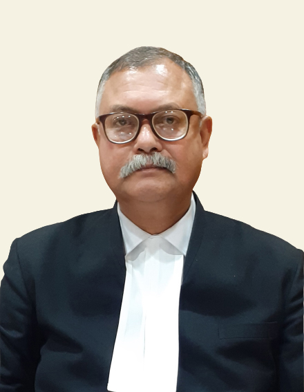
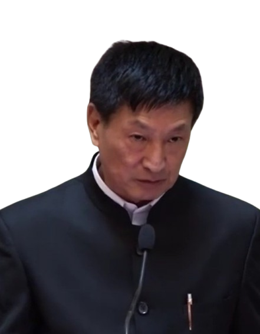

Introduction
The establishment of the institutions of Lokayukta is part of an ongoing effort to provide clean, transparent and accountable government to the people. Lokayukta today are the institutional manifestations of the need to provide a quasi-judicial body, which would act as a watchdog to pinpoint wrong doings of the administration, look into complaints of the victims of corrupt elements and suggest measures to improve the effectiveness and efficiency of our Government.
Arunachal Pradesh Lokayukta Act was enacted on March 4th, 2014. The office of Lokayukta Arunachal Pradesh became functional on 27th June, 2019. Presently, Justice Prasanta Kumar Deka (Retd) is the Chairperson of Lokayukta and Er. Sang Phuntsok, IAS (Retd), is the Member of Lokayukta. They were appointed on 20th August 2025.
Officials

